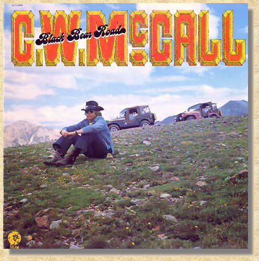
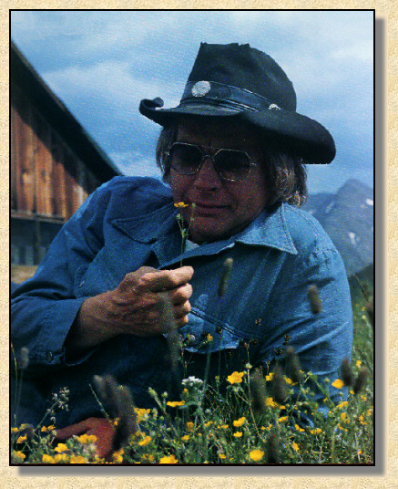

|
 Black Bear Road First Side Black Bear Road The Silverton Lewis And Clark** Oregon Trail Ghost Town The Other Side Convoy** Long Lonesome Road Green River Write Me A Song* Mountains On My Mind* |

Produced by Don Sears, Chip Davis Arranged by Chip Davis All Songs written by C. W. McCall, Bill Fries, Chip Davis Published by American Gramaphone SESAC Recorded & Mastered at Sound Recorders, Inc., Omaha, Nebraska Engineered by Don Sears, John Boyd Strings recorderd by Ron Ubel Album Design: Bill Fries, Don Sears Photography: Don Sears Art Direction: Sheri Leverich Art/Production: Dudycha, Schirck & Assoc. Inc., Omaha, Nebraska |
|
 The Cast: Guitar: Ron Steele, Bobbie Thomas, Ron Cooley** 5-String Banjo: Bobbie Thomas, Steve Hanson** Winches: Warn 4-String Banjo: Bobbir Thomas, Ron Steele Tires: Concorde Mandolin:Steve Hanson* Pedal Steele: Bobbie Thomas All Keyboards: Jackson Berkey Tympani, Percussian: Jackson Berkey Can Carriers and Hubs: Husky Bass: Eric Hansen, Jimmy Johnson* , Brian Sampson** Drums: Bill Berg, Don Simmons*, Chip Davis** Lights: K.C. Background Vocals: (The Puffys) Sarah Westphalen, Carol Rogers Trumpet: Gene Badgett French Horn: Dave Kappy Wheels: Tacoma Bass Trombone: Bill Buntain Tuba: Jim Schanilec Convoy Chorus: Dick Solowicz, Milt Bailey, Dick Ronelle, Tom Sinclair CB Radios: Hy-Gain Strings: Hugh Brown, Dorothy Brown, Merton Shatzkin, Martin Pearson, Alex Sokol, Joe Landes, Beth McCollum, Miriam Duffelmeyer Scream: Louis F. Davis Jr. |
|
Special thanks to the 4UR Ranch, Wagon Wheel Gap, Creede, Colorado for location, to Marvin Kline, JEEP Corporation, for use of the Renegades,
and to Joe Talbot, Larry Hopkins, Roger Darrington, of Four Wheel Drive Centers of America for the bolt-ons
(c) (P) 1975 MGM Records Inc. Manufactured and Distributed by POLYDOR Incorporated, 810 Seventh Avenue, New York, N.Y. 10019 Printed in U.S.A. |

This Web page is hosted by: Mark L. Evans
Written and maintained by: Miles A. Lumbard
Send Comments to:Miles A. Lumbard